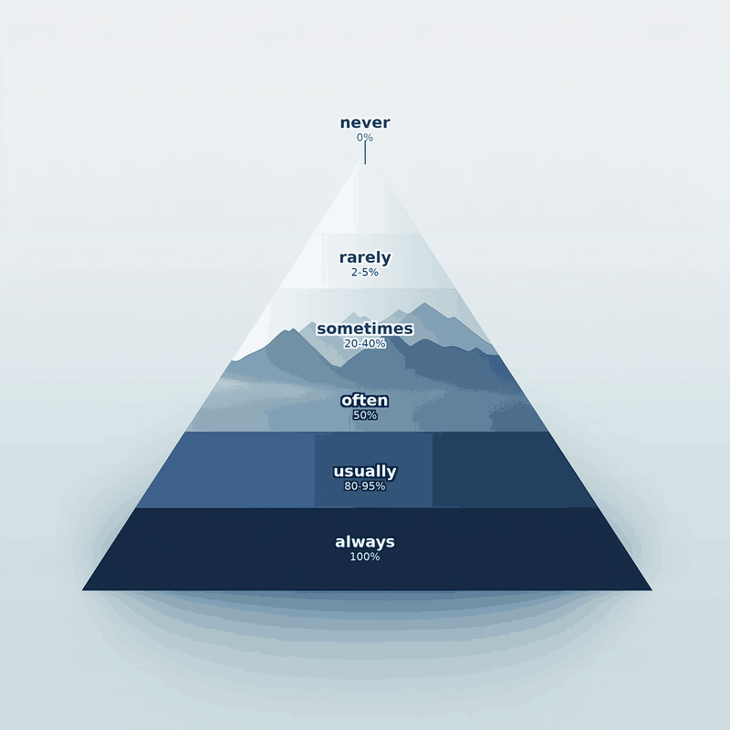

The bedrock
Before now, before any of this climb, there's the mountain itself. Present simple is the solid ground everything else stands on: facts, habits, things that don't move.

When to use it
General facts and truths
Things that are always true, no matter when you check.
Permanent states
Not expected to change any time soon.
Habits and routines
Repeated actions, usually with a frequency word.
Timetables and schedules
Fixed, official times — even for a future event.
State verbs
Thoughts, feelings, senses and possession rarely take continuous.
Instructions and directions
Step-by-step sequences, like a recipe or a route.
How it's built
Affirmative
subject + verb (+s / -es for he / she / it)
Negative
subject + do / does + not + base verb
Yes / No questions
Do / Does + subject + base verb?
Wh- questions
question word + do / does + subject + base verb?
Conjugation chart
Every person, every form — using the verb "to work" as the model.
| Subject | Affirmative | Negative | Question |
|---|---|---|---|
| I | I work | I do not work (don't) | Do I work? |
| You | You work | You do not work (don't) | Do you work? |
| He | He works | He does not work (doesn't) | Does he work? |
| She | She works | She does not work (doesn't) | Does she work? |
| It | It works | It does not work (doesn't) | Does it work? |
| We | We work | We do not work (don't) | Do we work? |
| They | They work | They do not work (don't) | Do they work? |
Signal words
Frequency, peak to base
- never (0%)
- rarely, seldom, hardly ever (2-5%)
- sometimes, occasionally (20-40%)
- often, frequently (50%)
- usually, normally, generally (80-95%)
- always (100%)
Time expressions
- every day / every Saturday
- once a week / twice a month
- three times a year
- now and again
- in general / as a rule
The frequency slider
The future that is already on a timetable
The bedrock reaches further than it looks. When a time has been published by somebody else — a railway, a cinema, a school — English treats it as a fact rather than a plan, and a fact takes the present simple even when it happens next week. The block stands in future time, but it is the same solid ground.
Timetables and programmes
Trains, flights, films, lessons — anything with a published time.
Somebody else set the time
You did not decide it and you cannot move it. That is the test.
Not your own plans
A personal arrangement takes the present continuous instead.